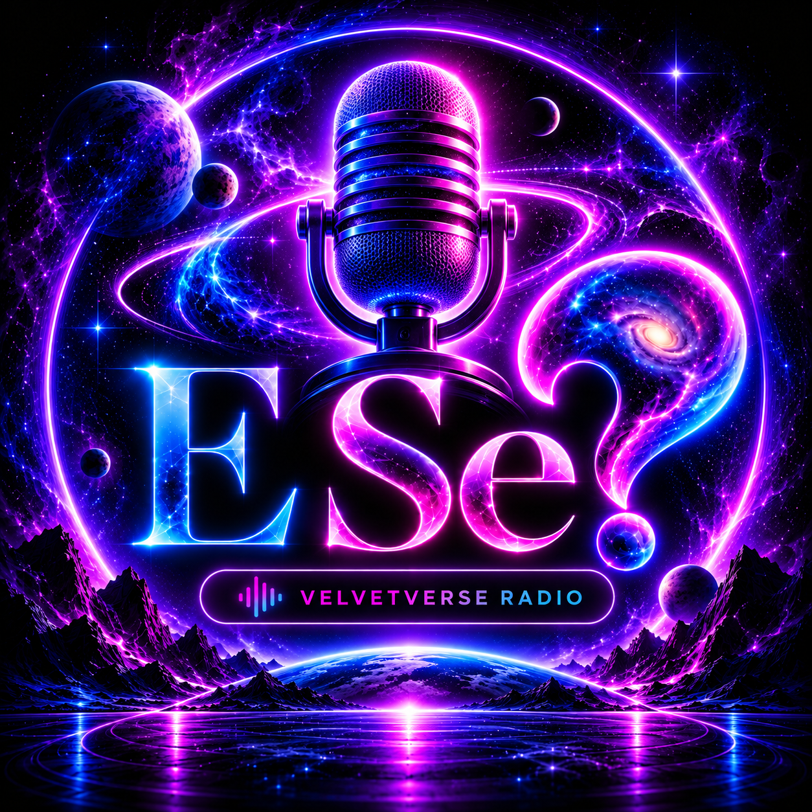

Perguntas que fazem pensar. Cenários imaginativos e possibilidades que desafiam a forma como vemos a vida, a tecnologia, a sociedade e o futuro. Uma rubrica apresentada por Rui Freitas.
O primeiro episódio de “E Se...?” está em preparação. Aqui ficará o episódio mais recente, com os anteriores disponíveis no arquivo.